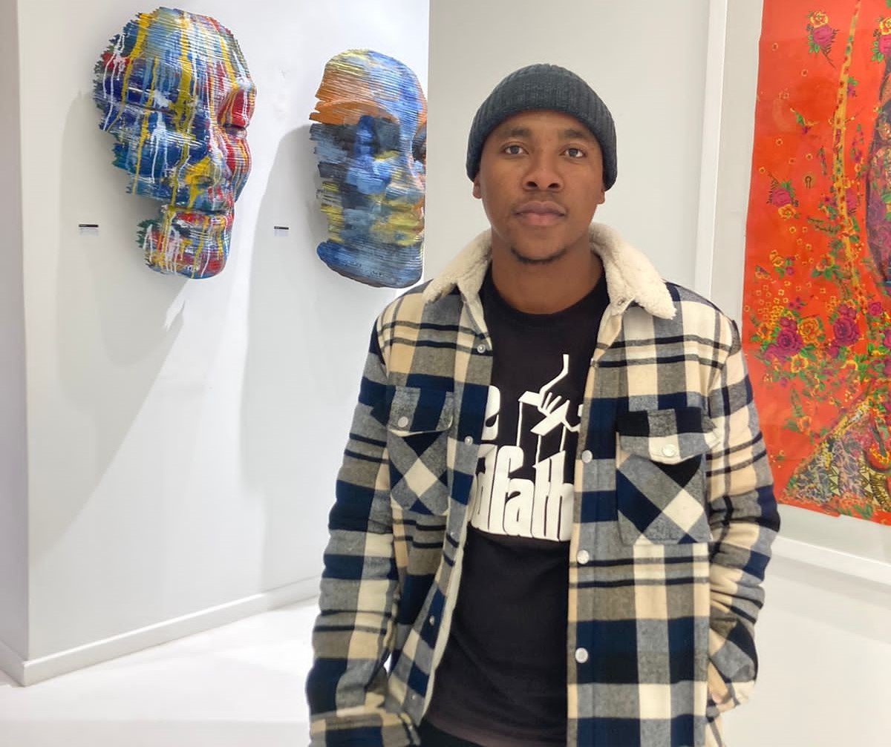

I love Web development, UI Design and System Analysis. I am a selectively skilled web developer with strong focus on producing high quality and impactful web-based systems
About Me
I love Web development, UI Design and System Analysis. I am a selectively skilled web developer with strong focus on producing high quality and impactful web-based systems
01
WHO AM I
Simphiwe Nene
I was born on the 26th of August 1998 in a small village called Emfundweni Thirst
Farm in
Newcastle.
I did my schooling there and matriculated in 2016, went to varsity after that and i
obtained my BCom MIS in 2020
I am currently doing a MEAN stack program in Afrika Tikkun and it is provided by a
great international company called Neutrinos.

02
PASSION
Technology
This passion comes from my eager to bring positive change and solutions in the world
Being a developer enables me to fire up my passion for technology because it allows me to use
my skills and solve real life problems.
Design
Design enables me to structure my thoughts properly and build cool things.
For me every work is a form of art, getting to see the final product of a person allows me to
see through them like understanding their trail of thoughts when they were building that
final product